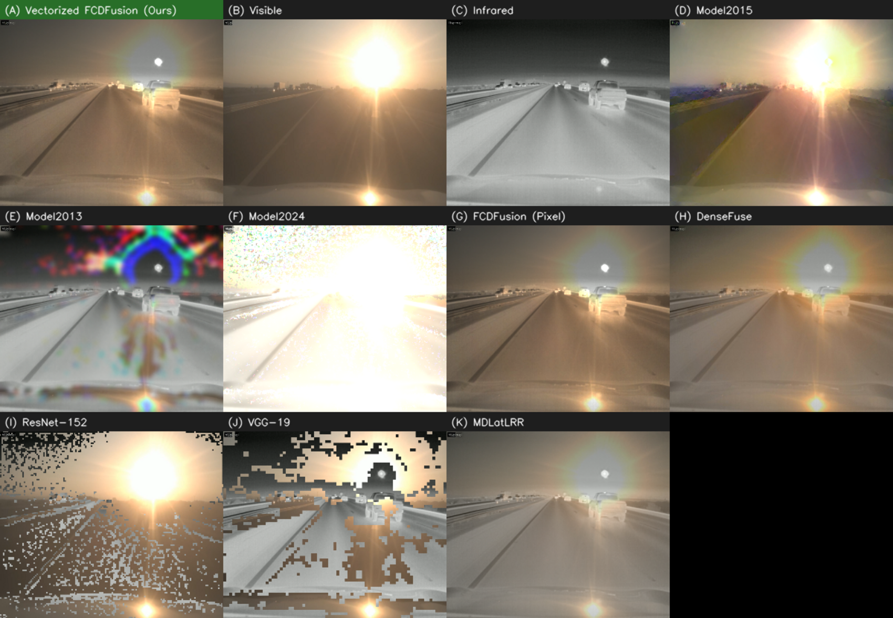
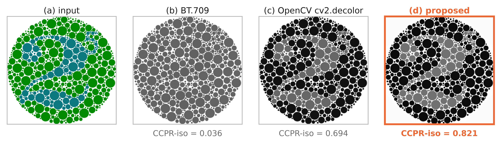
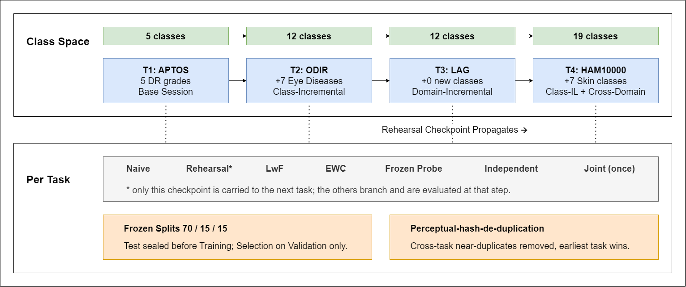

Research
My work starts from a practical question: will this method still hold up on the hardware and data it will actually meet? I reformulated an infrared–visible video fusion algorithm to run 46–106× faster on a processor with identical output, designed a 155k-parameter decolorizer that runs live on a Raspberry Pi 5, and built a leakage-free benchmark that measures what continual-learning models forget in medical imaging.
I am interested in efficient and deployable computer vision, image processing, and evaluation methods that survive contact with real deployment.
Selected work

Real-time infrared and visible video fusion on processor-only edge hardware
Accepted Cureus Journal of Computer Science (Springer Nature), 2026. First and corresponding author.
A fully vectorized reformulation of FCDFusion that gives bit-identical output, plus a lightweight score that exposes the flicker per-frame metrics miss. Nine fusion methods benchmarked under identical CPU-only conditions.
- 46× faster at 1024×1024 and 95–106× at surveillance resolution, same output
- 51.2 FPS live on a Raspberry Pi 5; every baseline stayed under 10 FPS
Paper [CUREUS URL WHEN PUBLISHED]
Code
Data and demo videos

Per-image cue weighting for real-time decolorization on edge devices
Manuscript Prepared for IEEE Access, 2026. First author, with Prof. Rashedur M. Rahman.
A 155k-parameter vision transformer reads a thumbnail and picks one of 16 learned weightings of four colour cues, keeping the speed of a fixed grey conversion while recovering contrast between colours of equal luminance.
- Highest contrast-preservation score of 10 methods on Color250
- 12 ms per frame on one CPU thread; 12–26 FPS live on a Raspberry Pi 5
Preprint [ARXIV URL, ONLY IF POSTED]
Code
Demo and logs

A leakage-free benchmark for continual learning in medical imaging
Manuscript Prepared for Medical Image Analysis, 2026. First author, with Silvia Ahmed.
Four medical tasks learned in sequence, with near-duplicate images removed across all tasks before any training. Twelve architectures, three seeds, and two external test sets that were never used in training.
- Replay beat naive fine-tuning in 14 of 14 paired runs
- Forgetting tracks how similar the tasks are, not how many classes are added
Preprint [ARXIV URL, ONLY IF POSTED]
Split manifests and code
Also: a scoping review of electric-vehicle adoption barriers and policy gaps in South Asia, published in Discover Vehicles (Springer Nature, 2026), where I collected and verified sources, wrote the conclusion and managed the references. Read the paper